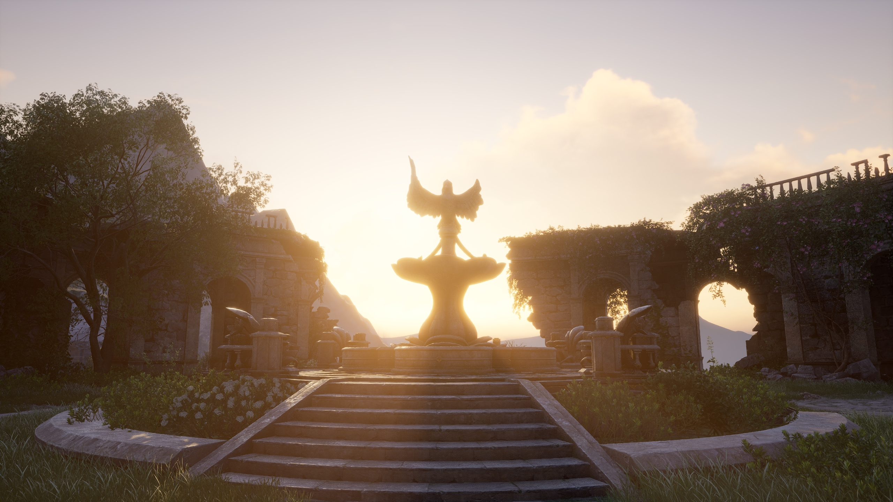

大陆起源：神明的愿望之地
奇迹大陆曾是众神的“愿望容器”——神明收集世间的美好祈愿，将其化为大陆的山川湖海、草木生灵。 这里的每一处风景，都承载着人类对“治愈”“温暖”的向往。
危机降临：愿望的反噬

随着时间流逝，祈愿中混入了“绝望”与“执念”，神明逐渐沉寂，大陆开始被“灰雾”侵蚀—— 原本治愈的场景变得荒凉，生物失去生机，唯有“搭配师的服装之力”能净化灰雾。
苏暖暖的使命：以穿搭点亮希望

玩家化身搭配师苏暖暖，与伙伴大喵一同踏上旅程：用不同风格的服装唤醒大陆的“愿望之力”， 解开神明沉寂的秘密，让奇迹大陆重回治愈与温暖。